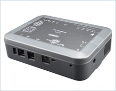
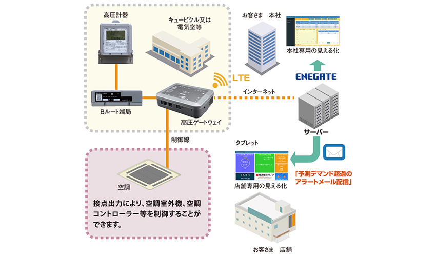

本製品は、高圧計器から電力データを取得してLTE回線にてサーバへ送信することができる製品です。収集した電力データをリアルタイムにデマンド管理等にご活用いただけます。
| 型式 | TCE-2M | |
|---|---|---|
| 通信方式（サーバ間） | LTE | |
| 通信周期（サーバ間） | 5分 | |
| データ取得方式 | 高圧Bルート もしくは パルス※1 | |
| 対応パルス定数 | 2,000pulse/kWh ／ 50,000 pulse/kWh | |
| データ通信周期 | 高圧スマートメーター間：30秒 | |
| データ保存期間 | 収集データ（1分毎）：最大2ヶ月（高圧Bルートおよびパルス）
定時電力データ（30分毎）：最大13ヶ月分（高圧Bルートのみ） |
|
| 保存データ | 高圧Bルート：積算電力等
パルス：積算電力換算値 |
|
| 簡易デマンド制御 | 30秒周期で予測電力を算出、設定した閾値を超過する場合に負荷遮断
遮断方式：優先方式／サイクリック方式 |
|
| インターフェース | Ethernet：2ポート（LAN1：メンテナンス用、LAN2：高圧Bルート用）
接点入力：1ポート（接点入力1：パルス用） 接点出力：4ポート（簡易デマンド制御用） RS485：1ポート（計測機器用） |
|
| 動作環境 | 温度：-10〜50℃
湿度：90%以下（結露無きこと） |
|
| 外形寸法 | 本体 | W 175 × H 130 × D 45 ( mm ) |
| アンテナ | W 49.6 × H 171 × L 83 ( mm )、ケーブル約6.0m | |
| ACアダプタ | W 34 × H 74 × L 79 ( mm )、ケーブル約1.5m | |
| 電源 | AC100V（ACアダプタDC5V） | |
※1：高圧スマートメーターからのデータ取得には、電力会社が提供している「高圧電力メーター情報発信サービス(高圧Bルートサービス)」
もしくは「パルス提供サービス」への申込みが必要です。なお、パルスによるデータ取得を行う場合は、別途パルス検出器が必要です。

ご相談は営業開発部 Tel. 06-6458-7936